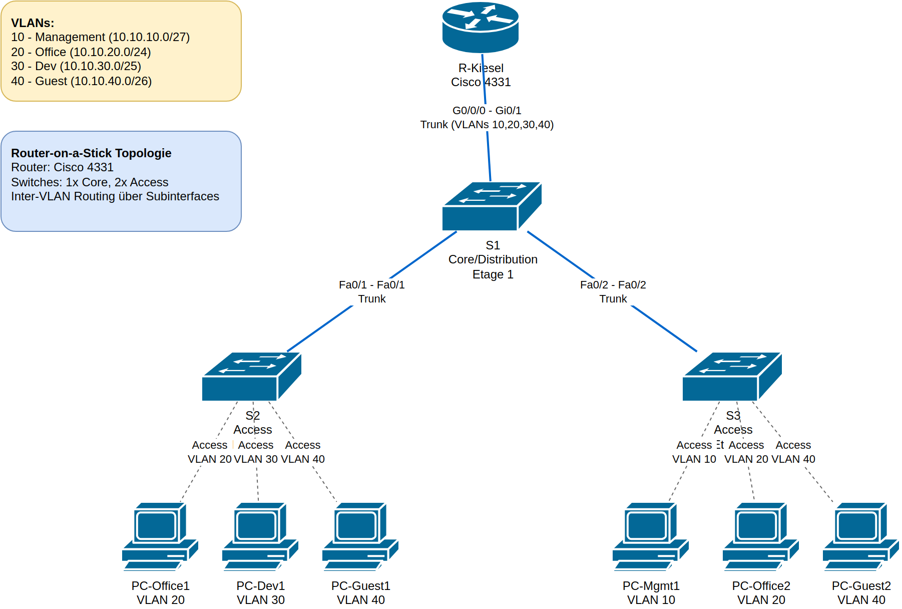

VLAN Router-on-a-Stick Konfiguration¶
Lernsituation¶
Ausgangssituation¶
Die Musterfirma AG möchte ihr Netzwerk in verschiedene logische Segmente unterteilen, um die Sicherheit zu erhöhen und den Netzwerkverkehr zu optimieren. Das Unternehmen verfügt über drei Etagen mit unterschiedlichen Abteilungen:
- Etage 1: IT-Verwaltung und Netzwerk-Administration (Management)
- Etage 2: Entwicklungsabteilung und Produktion
- Etage 3: Vertrieb, HR und Backoffice sowie Gästebereich
Für die kosteneffiziente Umsetzung soll eine Router-on-a-Stick Topologie mit VLANs implementiert werden.
Lernziele¶
Nach Abschluss dieser Übung können Sie: - VLANs auf Cisco Switches erstellen und konfigurieren - Trunk-Ports zwischen Switches und Router einrichten - Access-Ports einzelnen VLANs zuweisen - Router-on-a-Stick mit Subinterfaces konfigurieren - Inter-VLAN Routing verstehen und implementieren - Netzwerk-Konnektivität testen und verifizieren
Topologie¶

Netzwerkgeräte¶
- 1x Router: Cisco 4331 (R-Kiesel)
- 3x Switches:
- S1 (Core/Distribution Switch, Etage 1)
- S2 (Access Switch, Etage 2)
- S3 (Access Switch, Etage 3)
- 6x PCs: Endgeräte in verschiedenen VLANs
VLAN- und IP-Adressplan¶
| VLAN | Name | Zweck | Netz | Maske | Gateway (Router) |
|---|---|---|---|---|---|
| 10 | Management | IT/Netz-Admin | 10.10.10.0/27 | 255.255.255.224 | 10.10.10.1 |
| 20 | Office | Vertrieb/HR/Backoffice | 10.10.20.0/24 | 255.255.255.0 | 10.10.20.1 |
| 30 | Dev | Entwicklung/Produktion | 10.10.30.0/25 | 255.255.255.128 | 10.10.30.1 |
| 40 | Guest | Gäste/extern | 10.10.40.0/26 | 255.255.255.192 | 10.10.40.1 |
Hinweis: Für diese Übung bleibt Native VLAN = 1 (Default). Als Best Practice sollte in Produktionsumgebungen ein separates Native VLAN konfiguriert werden.
Netzwerkarchitektur¶
Logische Verbindungen:
- S1 (Etage 1, Core/Distribution)
- Gi0/1 → Router G0/0/0 (Trunk)
- Fa0/1 → S2 (Trunk)
-
Fa0/2 → S3 (Trunk)
-
S2 (Etage 2, Access)
-
Endgeräte-Ports als Access in VLAN 20/30/40
-
S3 (Etage 3, Access)
- Endgeräte-Ports als Access in VLAN 10/20/40
Arbeitsauftrag¶
Aufgabe 1: Basis-Konfiguration¶
1.1 Verkabelung vorbereiten¶
Verkabeln Sie die Geräte gemäß der Topologie: - R-Kiesel G0/0/0 ↔ S1 Gi0/1 (Copper Straight-Through) - S1 Fa0/1 ↔ S2 Fa0/1 (Copper Straight-Through) - S1 Fa0/2 ↔ S3 Fa0/2 (Copper Straight-Through) - PCs mit entsprechenden Switch-Ports verbinden
Aufgabe 2: Router-Konfiguration (R-Kiesel)¶
2.1 Router-on-a-Stick konfigurieren¶
enable
configure terminal
hostname R-Kiesel
no ip domain-lookup
! Physisches Interface aktivieren
interface g0/0/0
no shutdown
! VLAN 10 Subinterface
interface g0/0/0.10
encapsulation dot1Q 10
ip address 10.10.10.1 255.255.255.224
! VLAN 20 Subinterface
interface g0/0/0.20
encapsulation dot1Q 20
ip address 10.10.20.1 255.255.255.0
! VLAN 30 Subinterface
interface g0/0/0.30
encapsulation dot1Q 30
ip address 10.10.30.1 255.255.255.128
! VLAN 40 Subinterface
interface g0/0/0.40
encapsulation dot1Q 40
ip address 10.10.40.1 255.255.255.192
end
write memory
Erklärung:
- encapsulation dot1Q <vlan-id>: Konfiguriert 802.1Q VLAN-Tagging für das Subinterface
- Jedes Subinterface erhält die Gateway-IP-Adresse für das entsprechende VLAN
- Das physische Interface muss mit no shutdown aktiviert werden
Aufgabe 3: Switch S1 Konfiguration (Core/Distribution)¶
enable
configure terminal
hostname S1
no ip domain-lookup
! VLANs anlegen
vlan 10
name Management
vlan 20
name Office
vlan 30
name Dev
vlan 40
name Guest
! Trunk zu Router
interface gi0/1
switchport mode trunk
switchport trunk allowed vlan 10,20,30,40
no shutdown
! Trunk zu S2
interface fa0/1
switchport mode trunk
switchport trunk allowed vlan 10,20,30,40
no shutdown
! Trunk zu S3
interface fa0/2
switchport mode trunk
switchport trunk allowed vlan 10,20,30,40
no shutdown
! (Optional) Beispiel-Access-Ports für Etage 1
interface range fa0/11-12
switchport mode access
switchport access vlan 10
interface range fa0/13-18
switchport mode access
switchport access vlan 40
end
write memory
Erklärung:
- VLANs müssen zuerst auf dem Switch erstellt werden
- Trunk-Ports erlauben mehrere VLANs über eine Verbindung
- switchport trunk allowed vlan begrenzt die erlaubten VLANs (Best Practice)
Aufgabe 4: Switch S2 Konfiguration (Access, Etage 2)¶
enable
configure terminal
hostname S2
no ip domain-lookup
! VLANs anlegen
vlan 10
name Management
vlan 20
name Office
vlan 30
name Dev
vlan 40
name Guest
! Uplink-Trunk zu S1
interface fa0/1
switchport mode trunk
switchport trunk allowed vlan 10,20,30,40
no shutdown
! Access-Ports für Endgeräte (Etage 2)
interface range fa0/3-10
switchport mode access
switchport access vlan 20
interface range fa0/11-16
switchport mode access
switchport access vlan 30
interface range fa0/17-20
switchport mode access
switchport access vlan 40
end
write memory
Erklärung: - Access-Ports werden einem einzelnen VLAN zugewiesen - Endgeräte im gleichen VLAN können direkt kommunizieren - Kommunikation zwischen VLANs erfolgt über den Router
Aufgabe 5: Switch S3 Konfiguration (Access, Etage 3)¶
enable
configure terminal
hostname S3
no ip domain-lookup
! VLANs anlegen
vlan 10
name Management
vlan 20
name Office
vlan 30
name Dev
vlan 40
name Guest
! Uplink-Trunk zu S1
interface fa0/2
switchport mode trunk
switchport trunk allowed vlan 10,20,30,40
no shutdown
! Access-Ports für Endgeräte (Etage 3)
interface range fa0/3-6
switchport mode access
switchport access vlan 10
interface range fa0/7-14
switchport mode access
switchport access vlan 20
interface range fa0/15-18
switchport mode access
switchport access vlan 40
end
write memory
Aufgabe 6: PC-Konfiguration¶
Konfigurieren Sie die PCs mit folgenden IP-Adressen:
| PC | VLAN | IP-Adresse | Subnetzmaske | Gateway |
|---|---|---|---|---|
| PC-Mgmt1 | 10 | 10.10.10.10 | 255.255.255.224 | 10.10.10.1 |
| PC-Office1 | 20 | 10.10.20.10 | 255.255.255.0 | 10.10.20.1 |
| PC-Office2 | 20 | 10.10.20.11 | 255.255.255.0 | 10.10.20.1 |
| PC-Dev1 | 30 | 10.10.30.10 | 255.255.255.128 | 10.10.30.1 |
| PC-Guest1 | 40 | 10.10.40.10 | 255.255.255.192 | 10.10.40.1 |
| PC-Guest2 | 40 | 10.10.40.11 | 255.255.255.192 | 10.10.40.1 |
Verifikation und Tests¶
Test 1: VLAN-Konfiguration überprüfen¶
Auf allen Switches:
Erwartetes Ergebnis: Alle VLANs (10, 20, 30, 40) sollten mit korrekten Namen angezeigt werden.Test 2: Trunk-Status überprüfen¶
Auf S1:
Erwartetes Ergebnis: Trunk-Ports sollten als "trunking" angezeigt werden und VLANs 10,20,30,40 erlauben.Test 3: Router Subinterfaces überprüfen¶
Auf R-Kiesel:
Erwartetes Ergebnis: Alle Subinterfaces sollten "up/up" sein und die konfigurierten IP-Adressen zeigen.Test 4: Intra-VLAN Kommunikation testen¶
Von PC-Office1 zu PC-Office2:
Erwartetes Ergebnis: Erfolgreicher Ping (gleiche VLAN, direkte Kommunikation)Von PC-Guest1 zu PC-Guest2:
Erwartetes Ergebnis: Erfolgreicher PingTest 5: Inter-VLAN Kommunikation testen¶
Von PC-Office1 zu PC-Dev1 (unterschiedliche VLANs):
Erwartetes Ergebnis: Erfolgreicher Ping (Routing über R-Kiesel)Von PC-Mgmt1 zu PC-Guest1:
Erwartetes Ergebnis: Erfolgreicher PingTest 6: Gateway-Erreichbarkeit testen¶
Von PC-Office1:
Erwartetes Ergebnis: Erfolgreicher Ping zum GatewayVon PC-Dev1:
Erwartetes Ergebnis: Traceroute sollte Hop über 10.10.30.1 (Gateway) zeigenTroubleshooting¶
Problem: Kein Ping zwischen VLANs¶
Mögliche Ursachen: 1. Router Subinterfaces nicht konfiguriert oder down 2. Trunk-Ports nicht richtig konfiguriert 3. VLAN-Zuordnung auf Access-Ports falsch
Diagnose-Befehle:
! Auf Router
show ip interface brief
show ip route
! Auf Switches
show vlan brief
show interface trunk
show interface <port> switchport
Problem: Kein Ping innerhalb des gleichen VLANs¶
Mögliche Ursachen: 1. PCs im falschen VLAN 2. IP-Konfiguration der PCs falsch 3. Access-Port falsch konfiguriert
Diagnose:
Problem: Trunk-Port funktioniert nicht¶
Mögliche Ursachen: 1. Port-Modus nicht auf "trunk" gesetzt 2. Allowed VLANs nicht konfiguriert 3. Native VLAN Mismatch
Diagnose:
Lösung:
Erweiterte Aufgaben¶
Erweiterung 1: Separates Native VLAN¶
Konfigurieren Sie VLAN 99 als Native VLAN auf allen Trunk-Ports:
Erweiterung 2: Port Security¶
Implementieren Sie Port Security auf Access-Ports:
interface <access-port>
switchport port-security
switchport port-security maximum 2
switchport port-security violation restrict
switchport port-security mac-address sticky
Erweiterung 3: DHCP für VLANs¶
Konfigurieren Sie DHCP-Pools auf dem Router für alle VLANs:
ip dhcp pool VLAN10
network 10.10.10.0 255.255.255.224
default-router 10.10.10.1
dns-server 8.8.8.8
ip dhcp pool VLAN20
network 10.10.20.0 255.255.255.0
default-router 10.10.20.1
dns-server 8.8.8.8
Zusammenfassung¶
In dieser Übung haben Sie gelernt: - ✓ VLANs zu erstellen und zu benennen - ✓ Trunk-Ports zwischen Switches und Router zu konfigurieren - ✓ Access-Ports einzelnen VLANs zuzuweisen - ✓ Router-on-a-Stick mit 802.1Q Subinterfaces einzurichten - ✓ Inter-VLAN Routing zu implementieren - ✓ Netzwerk-Konnektivität zu testen und zu verifizieren - ✓ Probleme systematisch zu diagnostizieren und zu beheben
Wichtige Konzepte¶
Router-on-a-Stick: Eine Technik, bei der ein einziger Router-Port mit mehreren VLANs über 802.1Q Trunking kommuniziert. Jedes VLAN erhält ein eigenes Subinterface.
802.1Q: Der IEEE-Standard für VLAN-Tagging auf Ethernet-Netzwerken. Tags werden in Ethernet-Frames eingefügt, um VLAN-Zugehörigkeit zu identifizieren.
Trunk-Port: Ein Switch-Port, der mehrere VLANs über eine Verbindung transportieren kann.
Access-Port: Ein Switch-Port, der nur einem einzigen VLAN zugeordnet ist und für Endgeräte verwendet wird.
Native VLAN: Das VLAN, dem ungetaggte Frames auf einem Trunk-Port zugeordnet werden. Standard ist VLAN 1.
Lizenz und Hinweise¶
Diese Übung dient ausschließlich zu Schulungszwecken. Die Konfigurationsbeispiele verwenden private IP-Adressen und Platzhalter-Hostnamen.
Best Practices für Produktivumgebungen: - Verwenden Sie sichere Passwörter für enable secret und line vty - Konfigurieren Sie ein separates Native VLAN - Implementieren Sie Port Security - Nutzen Sie Access Control Lists (ACLs) für zusätzliche Sicherheit - Dokumentieren Sie alle Änderungen sorgfältig - Führen Sie regelmäßige Backups der Konfigurationen durch